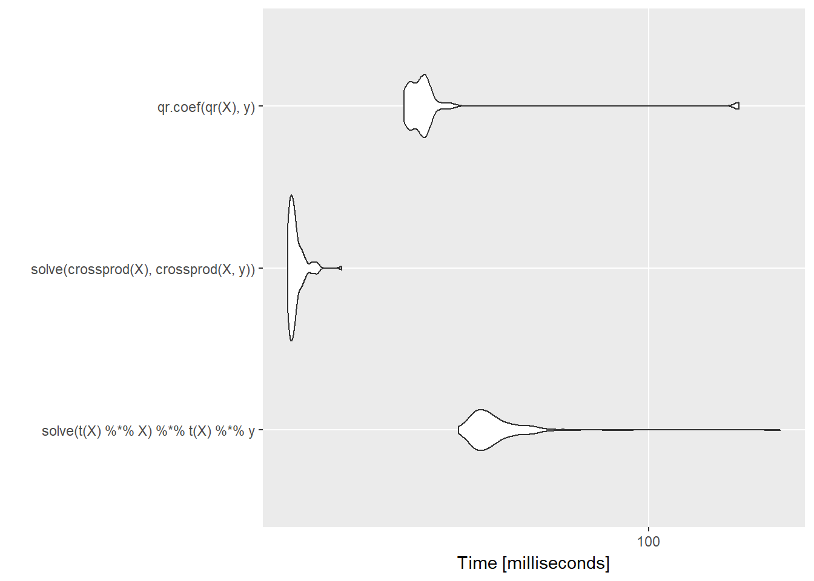

1.3 Textbooks vs. Computers
One confusing aspect of statistical computing is that often there is a disconnect between what is printed in a statistical computing textbook and what should be implemented on the computer. In textbooks, it is usually simpler to present solutions as convenient mathematical formulas whenever possible, in order to communicate basic ideas and to provide some insight. However, directly translating these formulas into computer code is usually not advisable because there are many problematic aspects of computers that are simply not relevant when writing things down on paper.
Some key issues to look for when implementing statistical or numerical solutions on the computer are
Overflow - When numbers get too big, they cannot be represented on a computer and so often
NAs are produced instead;Underflow - Similar to overflow, numbers can get too small for computers to represent, resulting in errors or warnings or inaccurate computation;
Near linear dependence - the existence of linear dependence in matrix computations depends on the precision of a machine. Because computers are finite precision, there are commonly situations where one might think there is no linear dependence but the computer cannot tell the difference.
All three of the above problems arise from the finite precision nature of all computers. One must take care to use algorithms that do calculations in the computable range and that automatically handle things like near dependence.
Below, I highlight some common examples in statistics where the implementation diverges from what textbooks explain as the solution: Computing with logarithms, the least squares solution to the linear regression estimation problem, and the computation of the multivariate Normal density. Both problems, on paper, involve inverting a matrix, which is typically a warning sign in any linear algebra problem. While matrix inverses are commonly found in statistics textbooks, it’s rare in practice that you will ever want to directly compute them. This point bears repeating: If you find yourself computing the inverse of a matrix, there is usually a better way of doing whatever you are trying to do.
1.3.1 Using Logarithms
Most textbooks write out functions, such as densities, in their natural form. For example, the univariate Normal distribution with mean \(\mu\) and variance \(\sigma^2\) is written \[
f(x\mid\mu,\sigma^2)
=
\frac{1}{\sqrt{2\pi}\sigma}e^{-\frac{1}{2\sigma^2}(x-\mu)^2}
\] and you can compute this value for any \(x\), \(\mu\), and \(\sigma\) in R with the dnorm() function.
But in practice, you almost never have to compute this exact number. Usually you can get away with computing the log of this value (and with dnorm() you can set the option log = TRUE). In some situations, such as with importance sampling, you do have to compute density values on the original scale, and that can be considered a disadvantage of that technique.
Computing densities with logarithms is much more numerically stable than computing densities without them. With the exponential function in the density, numbers can get very small quickly, to the point where they are too small for the machine to represent (underflow). In some situations, you may need to take the ratio of two densities and then you may end up with either underflow or overflow (if numbers get too big). Doing calculations on a log scale (and then exponentiating them later if needed) usually resolves problems of underflow or overflow.
In this book (and in any other), when you see expressions like \(f(x)/g(x)\), you should think that this means \(\exp(\log f(x) - \log(g(x)))\). The two are equivalent but the latter is likely more numerically stable. In fact, most of the time, you never have to re-exponentiate the values, in which case you can spend your entire time in log-land. For example, in the rejection sampling algorithm, you need to determine if \(U\leq\frac{f(x)}{g(x)}\). However, taking the log of both sides allows you to do the exact same comparison in a much more numerically stable way.
1.3.2 Linear Regression
The typical linear regression model, written in matrix form, is represented as follows,
\[ y = X\beta + \varepsilon \] where \(y\) is an \(n\times 1\) observed response, \(X\) is the \(n\times p\) predictor matrix, \(\beta\) is the \(p\times 1\) coefficient vector, and \(\varepsilon\) is \(n\times 1\) error vector.
In most textbooks the solution for estimating \(\beta\), whether it be via maximum likelihood or least squares, is written as
\[ \hat{\beta} = (X^\prime X)^{-1}X^\prime y. \] And indeed, that is the solution. In R, this could be translated literally as
betahat <- solve(t(X) %*% X) %*% t(X) %*% ywhere solve() is used to invert the cross product matrix \(X^\prime X\). However, one would never compute the actual value of \(\hat{\beta}\) this way on the computer. The formula presented above is only computed in textbooks.
The primary reason is that computing the direct inverse of \(X^\prime X\) is very expensive computationally and is a potentially unstable operation on a computer when there is high colinearity amongst the predictors. Furthermore, in computing \(\hat{\beta}\) we do not actually need the inverse of \(X^\prime X\), so why compute it? A simpler approach would be to take the normal equations, \[ X^\prime X\beta = X^\prime y \] and solve them directly. In R, we could write
solve(crossprod(X), crossprod(X, y))Rather than compute the inverse of \(X^\prime X\), we directly compute \(\hat{\beta}\) via Gaussian elimination. This approach has the benefit of being more numerically stable and being much faster.
set.seed(2017-07-13)
X <- matrix(rnorm(5000 * 100), 5000, 100)
y <- rnorm(5000)Here we benchmark the naive computation.
library(microbenchmark)
microbenchmark(solve(t(X) %*% X) %*% t(X) %*% y)Unit: milliseconds
expr min lq mean median
solve(t(X) %*% X) %*% t(X) %*% y 47.56642 51.34981 58.33341 54.22329
uq max neval
58.83291 101.612 100The following timing uses the solve() function to compute \(\hat{\beta}\) via Gaussian elimination.
microbenchmark(solve(t(X) %*% X) %*% t(X) %*% y,
solve(crossprod(X), crossprod(X, y)))Unit: milliseconds
expr min lq mean median
solve(t(X) %*% X) %*% t(X) %*% y 45.96281 48.84230 53.48634 50.52306
solve(crossprod(X), crossprod(X, y)) 22.24667 22.45159 22.94948 22.70641
uq max neval cld
53.32787 148.98025 100 b
23.12598 29.17004 100 a You can see that the betweeen the two approach there is a more than 5-fold difference in computation time, with the second approach being considerably faster.
However, this approach breaks down when there is any colinearity in the \(X\) matrix. For example, we can tack on a column to \(X\) that is very similar (but not identical) to the first column of \(X\).
W <- cbind(X, X[, 1] + rnorm(5000, sd = 0.0000000001))
solve(crossprod(W), crossprod(W, y)) [,1]
[1,] -1.009751e+03
[2,] -8.039783e-03
[3,] 4.684944e-03
[4,] 2.700024e-02
[5,] 6.355835e-03
[6,] 8.693650e-03
[7,] 1.440320e-02
[8,] -1.433221e-02
[9,] -9.035157e-03
[10,] -2.170287e-02
[11,] -1.737509e-02
[12,] 1.681501e-02
[13,] 2.223502e-03
[14,] -1.373478e-02
[15,] 1.167108e-03
[16,] -5.869775e-03
[17,] -6.319076e-04
[18,] 2.556232e-03
[19,] -4.057100e-03
[20,] -6.623820e-04
[21,] -3.384654e-03
[22,] 1.509237e-02
[23,] 5.172755e-04
[24,] -1.656931e-02
[25,] -1.321050e-02
[26,] -6.083916e-05
[27,] 1.027881e-02
[28,] 4.948704e-03
[29,] 1.012277e-02
[30,] 4.484213e-03
[31,] -1.133879e-02
[32,] 1.723859e-03
[33,] 3.625681e-03
[34,] 7.376709e-03
[35,] 1.794856e-02
[36,] 1.547454e-02
[37,] -2.234061e-02
[38,] 1.443603e-02
[39,] -2.052446e-02
[40,] -2.553873e-03
[41,] 2.351903e-02
[42,] 2.261801e-02
[43,] 2.021437e-02
[44,] 6.262966e-03
[45,] 7.463015e-03
[46,] -1.977186e-02
[47,] -6.093681e-02
[48,] -8.966449e-03
[49,] -8.477453e-03
[50,] -1.863702e-02
[51,] -3.808376e-03
[52,] 7.120105e-03
[53,] 2.219219e-03
[54,] 4.041155e-03
[55,] 1.878475e-02
[56,] -3.440053e-02
[57,] -6.169164e-03
[58,] 1.496643e-03
[59,] -8.046797e-03
[60,] -7.373807e-03
[61,] 3.833052e-03
[62,] 2.784244e-03
[63,] 8.004059e-03
[64,] -1.676562e-04
[65,] -1.035378e-02
[66,] -3.802059e-03
[67,] 1.025505e-02
[68,] 9.116551e-03
[69,] -7.395200e-03
[70,] -1.505831e-02
[71,] 1.617219e-02
[72,] 2.888739e-02
[73,] -2.593069e-02
[74,] 2.479187e-02
[75,] -7.660286e-03
[76,] 1.043432e-02
[77,] 7.832101e-03
[78,] -1.891912e-02
[79,] 7.746156e-03
[80,] -2.321135e-03
[81,] 7.036778e-03
[82,] 1.592099e-02
[83,] -1.004987e-02
[84,] -7.116285e-03
[85,] 3.188724e-03
[86,] -1.686812e-02
[87,] -3.881375e-03
[88,] 7.061706e-03
[89,] 7.478217e-03
[90,] 9.793769e-03
[91,] -2.878374e-02
[92,] 1.151801e-02
[93,] -6.219824e-03
[94,] -2.377119e-02
[95,] 1.127488e-02
[96,] -5.908337e-03
[97,] 2.185800e-02
[98,] -1.256333e-02
[99,] 1.826857e-02
[100,] -6.703255e-03
[101,] 1.009750e+03Now the approach doesn’t work because the cross product matrix \(W^\prime W\) is singular. In practice, matrices like these can come up a lot in data analysis and it would be useful to have a way to deal with it automatically.
R takes a different approach to solving for the unknown coefficients in a linear model. R uses the QR decomposition, which is not as fast, but has the added benefit of being able to automatically detect and handle colinear columns in the matrix.
Here, we use the fact that \(X\) can be decomposed as \(X = QR\), where \(Q\) is an orthonormal matrix and \(R\) is an upper triangular matrix. Given that, we can write
\[ X^\prime X\beta = X^\prime y \] as \[\begin{eqnarray*} R^\prime Q^\prime QR\beta & = & R^\prime Q^\prime y\\ R^\prime R\beta & = & R^\prime Q^\prime y\\ R\beta & = & Q^\prime y \end{eqnarray*}\]because \(Q^\prime Q = I\). At this point, we can solve for \(\beta\) via Gaussian elimination, which is greatly simplified because \(R\) is already upper triangular. The QR decomposition has the added benefit that we do not have to compute the cross product \(X^\prime X\) at all, as this matrix can be numericaly unstable if it is not properly centered or scaled.
We can see in R code that even with our singular matrix W above, the QR decomposition continues without error.
Qw <- qr(W)
str(Qw)List of 4
$ qr : num [1:5000, 1:101] 70.88664 -0.01277 0.01561 0.00158 0.02451 ...
$ rank : int 100
$ qraux: num [1:101] 1.01 1.03 1.01 1.02 1.02 ...
$ pivot: int [1:101] 1 2 3 4 5 6 7 8 9 10 ...
- attr(*, "class")= chr "qr"Note that the output of qr() computes the rank of \(W\) to be 100, not 101, because of the colinear column. From there, we can get \(\hat{\beta}\) if we want using qr.coef(),
betahat <- qr.coef(Qw, y)We do not show it here, but the very last element of betahat is NA because a coefficient corresponding to the last column of \(W\) (the collinear column) could not be calculated.
While the QR decomposition does handle colinearity, we do pay a price in speed.
library(ggplot2)
m <- microbenchmark(solve(t(X) %*% X) %*% t(X) %*% y,
solve(crossprod(X), crossprod(X, y)),
qr.coef(qr(X), y))
autoplot(m)
Compared to the approaches above, it is comparable to the naive approach but it is a much better and more stable method.
In practice, we do not use functions like qr() or qr.coef() directly because higher level functions like lm() do the work for us. However, for certain narrow, highly optimized cases, it may be fruitful to turn to another matrix decomposition to compute linear regression coefficients, particularly if this must be done repeatedly in a loop.
1.3.3 Multivariate Normal Distribution
Computing the multivariate normal density is a common problem in statistics, such as in fitting spatial statistical models or Gaussian process models. Because optimization procedures used to compute maximum likelihood estimates or likelihood ratios can be evaluated hundreds or thousands of times in a single run, it’s useful to have a highly efficient procedure for evaluating the multivariate Normal density.
The \(p\)-dimensional multivariate Normal density is written as
\[ \varphi(x\mid\mu,\Sigma) = -\frac{p}{2}\log 2\pi-\frac{1}{2}\log|\Sigma| - \frac{1}{2}(x-\mu)^\prime\Sigma^{-1}(x-\mu) \]
The critical, and most time-consuming, part of computing the multivariate Normal density is the quadratic form, \[ (x-\mu)^\prime\Sigma^{-1}(x-\mu). \] We can simplify this problem a bit by focusing on the centered version of \(x\) which we will refer to as \(z=x-\mu\). Hence, we are trying to compute \[ z^\prime\Sigma^{-1}z \]
Here, much like the linear regression example above, the key bottleneck is the inversion of the \(p\)-dimensional covariance matrix \(\Sigma\). If we take \(z\) to be a \(p\times 1\) column vector, then a literal translation of the mathematics into R code might look something like this,
t(z) %*% solve(Sigma) %*% zBut once again, we are taking on the difficult and unstable task of inverting \(\Sigma\) when, at the end of the day, we do not need this inverse.
Instead of taking the textbook translation approach, we can make use of the Cholesky decomposition of \(\Sigma\). The Cholesky decomposition of a positive definite matrix provides
\[ \Sigma = R^\prime R \]
where \(R\) is an upper triangular matrix. \(R\) is sometimes referred to as the “square root” of \(\Sigma\) (although it is not unique). Using the Cholesky decomposition of \(\Sigma\) and the rules of matrix algebra, we can then write
\[\begin{eqnarray*} z^\prime\Sigma^{-1}z & = & z^\prime (R^\prime R)^{-1}z\\ & = & z^\prime R^{-1}R^{\prime -1}z\\ & = & (R^{\prime -1}z)^\prime R^{\prime -1}z\\ & = & v^\prime v \end{eqnarray*}\]where \(v = R^{\prime -1} z\) and is a \(p\times 1\) vector. Furthermore, we can avoid inverting \(R^\prime\) by computing \(v\) as the solution to the linear system \[ R^\prime v = z \] Once we have computed \(v\), we can compute the quadratic form as \(v^\prime v\), which is simply the cross product of two \(p\)-dimensional vectors!
Another benefit of the Cholesky decomposition is that it gives us a simple way to compute the log-determinant of \(\Sigma\). The log-determinant of \(\Sigma\) is simply \(2\) times the sum of the log of the diagonal elements of \(R\).
Here is an implementation of the naive approach to computing the quadratic form in the multivariate Normal.
set.seed(2017-07-13)
z <- matrix(rnorm(200 * 100), 200, 100)
S <- cov(z)
quad.naive <- function(z, S) {
Sinv <- solve(S)
rowSums((z %*% Sinv) * z)
}We can first take a look at the output that this function produces.
library(dplyr)
quad.naive(z, S) %>% summary Min. 1st Qu. Median Mean 3rd Qu. Max.
73.57 93.54 100.59 100.34 106.39 129.12 The following is a version of the quadratic form function that uses the Cholesky decomposition.
quad.chol <- function(z, S) {
R <- chol(S)
v <- backsolve(R, t(z), transpose = TRUE)
colSums(v * v)
}We can verify that this function produces the same output as the naive version.
quad.chol(z, S) %>% summary Min. 1st Qu. Median Mean 3rd Qu. Max.
73.57 93.54 100.59 100.34 106.39 129.12 Now, we can time both procedures to see how they perform.
library(microbenchmark)
microbenchmark(quad.naive(z, S), quad.chol(z, S))Unit: microseconds
expr min lq mean median uq max
quad.naive(z, S) 1612.812 1736.153 2006.144 1824.102 1992.39 4435.319
quad.chol(z, S) 936.118 977.704 1148.600 1042.648 1203.15 3799.679
neval cld
100 b
100 a We can see that the version using the Cholesky decomposition takes about 60% of the time of the naive version. In a single evaluation, this may not amount to much time. However, over the course of potentially many iterations, these kinds of small savings can add up.
The key lesson here is that our use of the Cholesky decomposition takes advantage of the fact that we know that the covariance matrix in a multivariate Normal is symmetric and positive definite. The naive version of the algorithm that just blindly inverts the covariance matrix is not able to take advantage of this information.